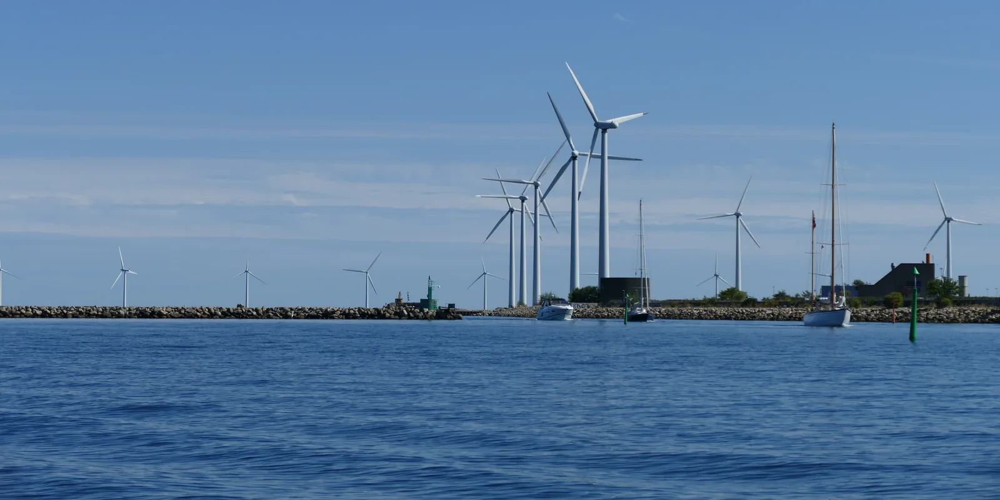

Vesi- ja tuulivoima energian muuntajina
Miksi sama Vuoksen vesi antaa Imatralla kolme kertaa suuremman tehon kuin Tainionkoskella? Ja miksi tuulivoimalan teho kasvaa paljon enemmän kuin tuulen nopeus?
Pohjatiedot
- Potentiaalienergia on $E_\text{p} = mgh$ ja liike-energia $E_\text{k} = \tfrac{1}{2}mv^2$luku Liike-energia, potentiaalienergia ja mekaaninen energia
- Kun vain painovoima tekee työtä, potentiaalienergia muuttuu liike-energiaksi ja mekaaninen energia säilyyluku Mekaanisen energian säilyminen ja energiaperiaate
- Teho kertoo, kuinka nopeasti energiaa muuntuu: $P = \tfrac{\Delta E}{\Delta t}$luku Teho
Ydinpolku: etene vaiheiden mukaan. Ydinpolkuun kuuluvat laskujen lisäksi tutkimukset, selitykset ja kuvaajat. Valinnainen-merkityt tehtävät tarjoavat lisäharjoittelua. Valinnaisia tehtäviä 3.
Pohdinta
Saimaasta laskeva Vuoksi virtaa ensin Tainionkosken voimalaitoksen ja muutaman kilometrin päässä alavirrassa Imatran voimalaitoksen läpi. Sama vesi pyörittää molempien turbiineja, mutta Imatran teho on $192\,\text{MW}$ ja Tainionkosken $62\,\text{MW}$. Tuulivoimalan teho taas vaihtelee tuulen mukana: heikolla tuulella se on pieni, mutta kun tuuli voimistuu vain vähän, teho voi kasvaa moninkertaiseksi.
Mistä vesi- ja tuulivoimalan teho riippuu, ja miksi tuulen nopeus vaikuttaa tehoon niin voimakkaasti?
Valinnainen Kertaa: liike-energia
Ennusta
Tee ennusteet ennen tutkimista 2 kysymystä
Ennuste 1: tuulen nopeus ja teho
Ennuste 2: kaksi voimalaa, sama vesi
Tutki
Tuulivoimalan tehokäyrä
Tilastoaineisto · Valmistajan ilmoittama tehokäyrä, Vestas V82, roottorin halkaisija $82\,\text{m}$: NREL Turbine Archive (nrel.github.io/turbine-models, tiedosto VestasV82_1.65MW_82.csv, kansio turbine_models/data/Onshore), luettu 30.10.2026.
Valmistaja ilmoittaa tuulivoimalan sähkötehon $P$ eri tuulen nopeuksilla $v$. Taulukko ja kuvaaja ovat voimalasta, jonka roottorin halkaisija on $82\,\text{m}$.
| $v$ (m/s) | $P$ (kW) |
|---|---|
| $3$ | $0$ |
| $4$ | $28$ |
| $5$ | $144$ |
| $6$ | $309$ |
| $7$ | $511$ |
| $8$ | $758$ |
| $9$ | $1017$ |
| $10$ | $1285$ |
| $11$ | $1504$ |
| $12$ | $1637$ |
| $13$ | $1650$ |
| $16$ | $1650$ |
| $20$ | $1650$ |
Kuinka monta kertaa suurempi on sähköteho tuulen nopeudella $10\,\text{m/s}$ kuin nopeudella $5\,\text{m/s}$?
Vihje 1: ohjaava kysymys
Lue taulukosta teho kummallakin tuulen nopeudella.
Vihje 2: mikä yhteys
Jaa suurempi teho pienemmällä.
Vihje 3: välivaihe
$1285\,\text{kW} : 144\,\text{kW}$
Näytä ratkaisu
Annettu
taulukosta $P_{5} = 144\,\text{kW}$, kun $v = 5\,\text{m/s}$, ja $P_{10} = 1285\,\text{kW}$, kun $v = 10\,\text{m/s}$
Kysytty
kuinka monta kertaa suurempi $P_{10}$ on kuin $P_{5}$, suhdeluku $x$ ilman yksikköä
Periaate
Kertoimen saa, kun suurempi teho jaetaan pienemmällä. Tehot ovat samaa voimalaa, joten ero johtuu vain tuulen nopeudesta.
Kaava
$P_{10} = x P_{5}$, joten $x = \dfrac{P_{10}}{P_{5}}$
Muunnokset
Kumpikin teho on kilowatteina, joten yksikkö supistuu eikä muunnoksia tarvita.
Sijoitus
Vastaus
$8{,}92$
Kolme merkitsevää numeroa kuten tehossa $144\,\text{kW}$. Teho kasvaa lähes yhdeksänkertaiseksi, kun tuulen nopeus kaksinkertaistuu.
Järkevyys
Jos teho olisi verrannollinen nopeuteen, kerroin olisi $2$, ja jos nopeuden neliöön, $4$. Tulos on lähellä lukua $2^3 = 8$, joten teho kasvaa suunnilleen nopeuden kolmannessa potenssissa.
Lisää tutkittavaa 2 tehtävää
Vuoksen kaksi voimalaitosta
Tilastoaineisto · Teho ja putouskorkeus: Fortum, Vuoksen vesistön voimalaitokset (fortum.com), luettu 30.10.2026. Vuoksen vuotuinen keskivirtaama noin $600\,\text{m}^3\text{/s}$: Kaakkois-Suomen elinvoimakeskus, tiedote 29.4.2026.
Vuoksen vesi virtaa ensin Tainionkosken ja sitten Imatran voimalaitoksen läpi, joten virtaama on molemmissa lähes sama. Vuoksen vuotuinen keskivirtaama on noin $600\,\text{m}^3\text{/s}$, mutta suurin teho saavutetaan turbiinien suurimmalla virtaamalla, noin $900\,\text{m}^3\text{/s}$ (laskettu hyötysuhteella $\eta \approx 0{,}90$, ei mitattu). Taulukossa ovat voimalaitosten suurimmat sähkötehot $P$ ja putouskorkeudet $h$.
| voimalaitos | $P$ (MW) | $h$ (m) |
|---|---|---|
| Tainionkoski | $62$ | $7{,}8$ |
| Imatra | $192$ | $24$ |
Johtopäätös
Selitä aineistojen avulla, mistä vesivoimalan ja tuulivoimalan teho riippuvat. Käytä perustelussa potentiaali- ja liike-energiaa.
Mallivastaus
Vuoksen vesi virtaa sekä Tainionkosken että Imatran läpi, joten virtaama on lähes sama. Imatran putouskorkeus $24\,\text{m}$ on noin kolme kertaa Tainionkosken $7{,}8\,\text{m}$, ja Imatran teho $192\,\text{MW}$ on noin kolme kertaa Tainionkosken $62\,\text{MW}$. Teho on siis verrannollinen putouskorkeuteen, koska jokaisen vesikilogramman potentiaalienergia $mgh$ on verrannollinen korkeuteen. Lisäksi teho kasvaa, kun sekunnissa putoavaa vettä on enemmän. Tuulivoimalan teho kasvaa tuulen nopeudesta $5\,\text{m/s}$ nopeuteen $10\,\text{m/s}$ $144\,\text{kW}$:sta $1285\,\text{kW}$:iin eli noin $8{,}9$-kertaiseksi. Kaksinkertaisella tuulella roottorin läpi virtaa sekunnissa kaksi kertaa enemmän ilmaa, ja jokaisella ilmakilogrammalla on liike-energiaa $\tfrac{1}{2}mv^2$ neljä kertaa enemmän, joten teho kasvaa noin $2 \cdot 4 = 8$ -kertaiseksi.
Arvioi oma vastauksesi
Rastita kohdat, jotka omassa vastauksessasi jo on.
Kertaa asia teoriasta ja harjoittele tehtävillä.
Teoria
Ydinajatus
Voimala muuntaa energiaa
Vesi- ja tuulivoimala eivät tuota energiaa tyhjästä. Ne muuntavat veden tai ilman mekaanista energiaa sähköksi. Padon takana olevalla vedellä on potentiaalienergiaa $E_\text{p} = mgh$ alaveteen verrattuna. Kun vesi virtaa putkea alas, potentiaalienergia muuttuu liike-energiaksi, kuten luvussa Mekaanisen energian säilyminen ja energiaperiaate. Nopea vesivirta painaa turbiinin siipiä ja pyörittää turbiinia (monessa turbiinissa myös veden paine tekee työtä, mutta energiaketju on sama), ja turbiinin akseli pyörittää generaattoria, joka muuttaa pyörimisen energian sähköksi. Turbiinin jälkeen vesi virtaa hitaasti alaveteen. Ylä- ja alaveden pintojen korkeuseroa sanotaan putouskorkeudeksi $h$.
Teho kertoo energiaa sekunnissa
Voimalaa kuvataan teholla: kuinka paljon energiaa se muuntaa sekunnissa. Kun yksi kuutiometri vettä eli $1000\,\text{kg}$ putoaa Imatran putouskorkeuden $24\,\text{m}$, sen potentiaalienergiaa vapautuu $mgh \approx 235\,\text{kJ}$. Jos turbiinien läpi virtaa sekunnissa satoja kuutiometrejä, teho on satoja megawatteja. Teho kasvaa siis kahdesta syystä: kun sekunnissa putoavaa vettä on enemmän ja kun se putoaa korkeammalta. Vuoksen vesi virtaa ensin Tainionkosken ja sitten Imatran voimalaitoksen läpi, joten virtaama on molemmissa sama. Imatran putouskorkeus on noin kolme kertaa suurempi, ja niin on sen tehokin.
Hyötysuhde
Kaikki veden menettämä energia ei muutu sähköksi. Vesi hankaa putken seiniä, turbiini ja generaattori lämpenevät, ja alaveteen purkautuvalla vedellä on vielä vähän liike-energiaa. Voimalan hyötysuhde on sen antaman sähkötehon $P_\text{s}$ ja siihen otetun tehon $P_\text{o}$ suhde:
$$\eta = \frac{P_\text{s}}{P_\text{o}}$$
missä $\eta$ (eta) on hyötysuhde, joka ilmoitetaan desimaalilukuna tai prosentteina. Hyötysuhde on enintään $100\,\%$. Todellisissa laitteissa se jää usein alle $100\,\%$, koska osa otetusta energiasta ei päädy määriteltyyn hyödylliseen käyttötarkoitukseen, tässä sähköksi. Suuren vesivoimalan hyötysuhde on noin $90\,\%$.
Tuulen liike-energia
Tuulivoimalassa energian lähde on liikkuvan ilman liike-energia $E_\text{k} = \tfrac{1}{2}mv^2$. Tuuli painaa roottorin lapoja ja pyörittää roottoria, ja ilma hidastuu ohittaessaan roottorin. Roottori ei voi pysäyttää ilmaa kokonaan, koska ilman on päästävä virtaamaan pois roottorin takaa. Siksi edes ihanteellinen roottori ei saa talteen kuin noin $59\,\%$ siitä tehosta, jonka häiriötön tuuli kuljettaa roottorin pyyhkäisypinta-alan läpi, ja todellisen tuulivoimalan osuus on alle puolet. Ilma on kevyttä: kuutiometrin massa on vain noin $1{,}25\,\text{kg}$. Siksi tuulivoimalan roottorin on oltava suuri, jotta sen läpi virtaisi sekunnissa paljon ilmaa.

Vesi- ja tuulivoimalan teho
Vesivoimala
Virtaama $Q$ kertoo, montako kuutiometriä vettä virtaa sekunnissa turbiinien läpi. Ajassa $t$ turbiinien läpi virtaa tilavuus $V = Qt$, jonka massa on $m = \rho V = \rho Q t$. Sen potentiaalienergia putouskorkeudella $h$ on $mgh = \rho Q t g h$, joten veden tuoma teho on $P_\text{o} = \rho Q g h$. Hyötysuhteen mukaan sähköteho on $\eta$ kertaa tämä:
$$P = \eta \rho Q g h$$
missä $P$ on voimalan sähköteho ($\text{W}$), $\eta$ hyötysuhde, $\rho$ veden tiheys ($1000\,\text{kg/m}^3$), $Q$ virtaama ($\text{m}^3\text{/s}$), $g$ putoamiskiihtyvyys ($9{,}81\,\text{m/s}^2$) ja $h$ putouskorkeus ($\text{m}$). Kaavassa oletetaan, että veden liike-energia on ylä- ja alavedessä pieni, joten muuntuva energia on potentiaalienergian muutos.
Tuulivoimala
Tarkastellaan ensin häiriötöntä tuulta eli tuulta, jota roottori ei ole vielä hidastanut. Ajassa $t$ häiriötön tuuli, jonka nopeus on $v$, kuljettaisi roottorin pyyhkäisypinta-alan $A = \pi r^2$ läpi ilman, joka täyttää lieriön, jonka pituus on $vt$. Tämän ilman massa on $m = \rho A v t$, ja sen liike-energia on $\tfrac{1}{2}mv^2 = \tfrac{1}{2}\rho A v^3 t$. Häiriöttömän tuulen tehovirta pyyhkäisypinta-alan läpi on siis $P_\text{tuuli} = \tfrac{1}{2}\rho A v^3$.
Todellisuudessa roottori hidastaa ilmaa jo ennen lapoja, joten roottorin kohdalla ilma virtaa hitaammin kuin $v$, eikä sen massavirta ole $\rho A v$. Siksi $P_\text{tuuli}$ on vertailuteho: se kertoo, kuinka paljon energiaa sekunnissa samankokoisen alueen läpi kulkisi ilman voimalaa. Voimalan hyötysuhde $\eta$ määritellään osuudeksi tästä vertailutehosta, $\eta = P : P_\text{tuuli}$.
Sähköteho on siis:
$$P = \frac{1}{2}\eta \rho A v^3$$
missä $P$ on sähköteho ($\text{W}$), $\eta$ voimalan hyötysuhde eli sähkötehon osuus häiriöttömän tuulen vertailutehosta, $\rho$ ilman tiheys (noin $1{,}25\,\text{kg/m}^3$), $A$ roottorin pyyhkäisemä pinta-ala ($\text{m}^2$) ja $v$ häiriöttömän tuulen nopeus ($\text{m/s}$).
Miksi nopeus on kolmannessa potenssissa?
Kun tuulen nopeus kaksinkertaistuu, pyyhkäisypinta-alan läpi kulkee sekunnissa kaksi kertaa enemmän ilmaa, ja jokaisella ilmakilogrammalla on neljä kertaa enemmän liike-energiaa. Vertailuteho kasvaa siis $2 \cdot 4 = 2^3 = 8$ -kertaiseksi. Sähköteho kasvaa samassa suhteessa vain mallissa, jossa hyötysuhde pysyy likimain vakiona. Todellisen voimalan tehokäyrässä teho kasvaa tuulen nopeudesta $5\,\text{m/s}$ nopeuteen $10\,\text{m/s}$ noin $8{,}9$-kertaiseksi, koska hyötysuhde on suuremmalla nopeudella vähän parempi.
Todellisella voimalalla on lisäksi kolme tuulen nopeuden aluetta, joita kuutiollinen malli ei kuvaa. Käynnistysnopeutta heikommassa tuulessa, tällä voimalalla noin $3\text{–}4\,\text{m/s}$, voimala ei tuota sähköä. Noin $13\,\text{m/s}$:n tuulesta alkaen teho pysyy $1650\,\text{kW}$:ssa. Se on voimalan nimellisteho, jota generaattori ei voi ylittää, joten lapoja käännetään päästämään osa tuulesta ohi. Silloin kaava vakiohyötysuhteella ei enää kuvaa voimalaa. Pysäytysnopeutta voimakkaammassa myrskytuulessa voimala pysäytetään rakenteiden suojaamiseksi, ja sen teho putoaa nollaan.
Kuvaajan pisteet ovat Vestas V82 -tuulivoimalan valmistajan tehokäyrä (roottorin halkaisija $82\,\text{m}$, nimellisteho $1650\,\text{kW}$). Valmistajan tehokäyrä ilmoitetaan vakio-olosuhteissa, tavallisesti ilman tiheydelle $1{,}225\,\text{kg/m}^3$ ja kymmenen minuutin keskituulille napakorkeudella. Mallin katkoviiva on laskettu tiheydellä $1{,}25\,\text{kg/m}^3$, joten vertailu on likimääräinen. Liian voimakkaassa tuulessa voimala pysäytetään, jolloin sen teho putoaa nollaan; kuvaaja ei näytä tätä aluetta. Lähde: Vestas Wind Systems, V82-voimalan tekniset tiedot; lukuarvot NREL:n tuulivoimala-arkistosta (turbine-models, Vestas V82).
Yleinen virhekäsitys
Usein ajatellaan, että voimala tuottaa energiaa. Voimala muuntaa energiaa: vesivoimalan sähkö on peräisin veden potentiaalienergiasta ja tuulivoimalan sähkö tuulen liike-energiasta, ja osa energiasta muuttuu aina muuksi kuin sähköksi. Toinen virhe on olettaa, että kaksinkertainen tuuli antaa kaksinkertaisen tehon. Teho kasvaa nopeuden kolmannessa potenssissa, kunnes voimala saavuttaa nimellistehonsa. Kolmas virhe on sekoittaa teho ja energia: teho ilmoitetaan watteina, ja energia saadaan, kun teho kerrotaan ajalla. Voimala, jonka teho on $3\,\text{MW}$, tuottaa tunnissa $3\,\text{MWh}$ energiaa.
Tiivistelmä
- Vesi- ja tuulivoimala muuntavat mekaanista energiaa sähköksi: vesivoimala veden potentiaalienergiaa, tuulivoimala ilman liike-energiaa.
- Hyötysuhde $\eta = \tfrac{P_\text{s}}{P_\text{o}}$ on enintään $100\,\%$; suuren vesivoimalan hyötysuhde on noin $90\,\%$ ja tuulivoimalan alle $50\,\%$.
- Vesivoimalan teho on $P = \eta\rho Q g h$: se on verrannollinen virtaamaan ja putouskorkeuteen.
- Tuulivoimalan teho on $P = \tfrac{1}{2}\eta\rho A v^3$: kun hyötysuhde pysyy likimain vakiona, kaksinkertainen tuulen nopeus antaa noin kahdeksankertaisen tehon, kunnes voimala saavuttaa nimellistehonsa. Hyvin voimakkaassa tuulessa voimala pysäytetään.
- Energia on teho kertaa aika, $E = Pt$.
Valinnainen Palaa ennusteisiisi
Vertaa ennusteitasi aineistoihin ja teoriaan. Kirjoita omin sanoin, miksi tuulen nopeuden kaksinkertaistuminen ei vain kaksin- tai nelinkertaista tehoa.
Muuttaisitko ennustettasi?
Esimerkit
Kun olet opiskellut luvun teorian, siirry ohjattuihin esimerkkeihin. Ensimmäisessä seuraat mallilaskua vaihe vaiheelta, seuraavissa teet valinnat itse, ja vihjeet auttavat, jos jäät jumiin.
Esimerkki 1: Tuulivoimalan teho
Tuulivoimalan roottorin halkaisija on $120\,\text{m}$. Tuulen nopeus on $9{,}0\,\text{m/s}$ ja ilman tiheys $1{,}25\,\text{kg/m}^3$. Voimala muuttaa sähköksi $45\,\%$ siitä tehosta, jonka häiriötön tuuli kuljettaa roottorin pyyhkäisypinta-alan läpi. Kuinka suuri on voimalan sähköteho?
Vaihe 1/7
Tunnetut ja kysytty. Roottorin halkaisija $d = 120\,\text{m}$, tuulen nopeus $v = 9{,}0\,\text{m/s}$, ilman tiheys $\rho = 1{,}25\,\text{kg/m}^3$ ja hyötysuhde $\eta = 45\,\%$. Kysytään sähkötehoa $P$.
Vaihe 2/7
Periaate. Häiriötön tuuli kuljettaa roottorin pyyhkäisypinta-alan läpi tehon $\tfrac{1}{2}\rho A v^3$. Voimala muuttaa tästä vertailutehosta sähköksi osuuden $\eta$, joten sähköteho saadaan tuulivoimalan tehon kaavasta. Pinta-ala $A$ on roottorin pyyhkäisemä ympyrä.
Vaihe 3/7
Kaava ratkaistuna. Kaava antaa kysytyn tehon suoraan, kun pinta-ala lasketaan säteestä $r = \tfrac{d}{2}$:
$$\begin{aligned} P &= \tfrac{1}{2}\eta\rho A v^3 \\ A &= \pi r^2 \end{aligned}$$
Vaihe 4/7
Yksikkömuunnokset. Säde on $r = 120\,\text{m} : 2 = 60\,\text{m}$, ja hyötysuhde desimaalilukuna on $\eta = 0{,}45$. Muut suureet ovat SI-yksiköissä, ja
Vaihe 5/7
Sijoitus. Lasketaan ensin pinta-ala ja sitten teho:
$$\begin{aligned} A &= \pi r^2 \\ &= \pi\cdot(60\,\text{m})^2 \\ &= 11\,309{,}7\,\text{m}^2 \\ P &= \tfrac{1}{2}\eta\rho A v^3 \\ &= 0{,}5\cdot 0{,}45\cdot 1{,}25\,\tfrac{\text{kg}}{\text{m}^3} \\ &\quad\cdot 11\,309{,}7\,\text{m}^2\cdot\left(9{,}0\,\tfrac{\text{m}}{\text{s}}\right)^3 \\ &= 2\,318\,849\,\text{W} \end{aligned}$$
Vaihe 6/7
Tulos. Sähköteho on noin $2{,}3\,\text{MW}$, kahden merkitsevän numeron tarkkuudella kuten tuulen nopeudessa $9{,}0\,\text{m/s}$ ja hyötysuhteessa $0{,}45$.
Vaihe 7/7
Järkevyys. Tehokäyrän voimala, jonka roottorin halkaisija on $82\,\text{m}$, antaa tuulen nopeudella $9\,\text{m/s}$ tehon $1017\,\text{kW}$. Tämän roottorin pinta-ala on $(120 : 82)^2 \approx 2{,}1$ kertaa suurempi, joten tehon pitäisi olla noin $2{,}1 \cdot 1{,}0\,\text{MW} \approx 2{,}2\,\text{MW}$. Tulos $2{,}3\,\text{MW}$ on samaa suuruusluokkaa. Häiriöttömän tuulen vertailuteho on $5{,}2\,\text{MW}$, ja sähköksi saadaan alle puolet, kuten pitääkin.
Esimerkki 2: Etsi virhe
Valinnainen Esimerkki 3: Sovella uuteen tilanteeseen
Pumppuvoimala varastoi sähköä nostamalla vettä alemmasta altaasta ylempään, kun sähköä on liikaa, ja tuottaa sähköä päästämällä veden takaisin alas. Suunnitellussa voimalassa altaiden pintojen korkeusero on $1{,}40\,\text{km}$, ja voimalan hyötysuhde vettä alas päästettäessä on $0{,}850$.
Kuinka suuri virtaama tarvitaan, jotta sähköteho on $75{,}0\,\text{MW}$? Vastaa kuutiometreinä sekunnissa.
Vihje 1: ohjaava kysymys
Mikä tämän tilanteen putouskorkeus on metreinä?
Vihje 2: mikä yhteys
Ratkaise vesivoimalan tehon kaavasta $P = \eta\rho Q g h$ virtaama $Q$.
Vihje 3: välivaihe
$Q = \dfrac{P}{\eta\rho g h}$, jossa $P = 75{,}0 \cdot 10^{6}\,\text{W}$ ja $h = 1400\,\text{m}$.
Näytä ratkaisu
Annettu
korkeusero $h = 1{,}40\,\text{km}$, hyötysuhde $\eta = 0{,}850$, sähköteho $P = 75{,}0\,\text{MW}$; veden tiheys $\rho = 1000\,\text{kg/m}^3$, $g = 9{,}81\,\text{m/s}^2$
Kysytty
virtaama $Q$ yksikössä $\text{m}^3\text{/s}$
Periaate
Alas virtaava vesi menettää potentiaalienergiaa, ja voimala muuttaa siitä sähköksi osuuden $\eta$. Pumppuvoimala toimii sähköä tuottaessaan kuin tavallinen vesivoimala, joten käytetään vesivoimalan tehon kaavaa.
Kaava
$P = \eta\rho Q g h$, joten $Q = \dfrac{P}{\eta\rho g h}$
Muunnokset
Sijoitus
Yksiköt ovat SI-yksiköitä, ja
joten
Vastaus
$6{,}42\,\text{m}^3\text{/s}$
Kolme merkitsevää numeroa kuten korkeuserossa $1{,}40\,\text{km}$, hyötysuhteessa $0{,}850$ ja tehossa $75{,}0\,\text{MW}$.
Järkevyys
Imatralla sama teho vaatisi noin $75 : 192$ suurimmasta virtaamasta $900\,\text{m}^3\text{/s}$ eli yli $300\,\text{m}^3\text{/s}$. Putouskorkeus on tässä noin $58$ kertaa Imatran $24\,\text{m}$, joten virtaamaa tarvitaan kymmeniä kertoja vähemmän.
Tehtävät
Taso 1 · perusharjoitus 8 tehtävää
Yksi kaava tai yksi päättelyaskel. Ydintehtävät ensin, loput lisäharjoitusta.
- Tehtävä 12-1Ydintehtävä
Vesivoimalan putouskorkeus on $15{,}0\,\text{m}$, ja turbiinien läpi virtaa $120\,\text{m}^3$ vettä sekunnissa. Voimalan hyötysuhde on $0{,}900$. Kuinka suuri on voimalan sähköteho?
Vastaus
$15{,}9\,\text{MW}$
Näytä ratkaisu
Annettu
putouskorkeus $h = 15{,}0\,\text{m}$, virtaama $Q = 120\,\text{m}^3\text{/s}$, hyötysuhde $\eta = 0{,}900$; veden tiheys $\rho = 1000\,\text{kg/m}^3$, $g = 9{,}81\,\text{m/s}^2$
Kysytty
sähköteho $P$ yksikössä $\text{MW}$
Periaate
Turbiinien läpi putoava vesi menettää potentiaalienergiaa $mgh$, ja sekunnissa putoaa massa $\rho Q$. Voimala muuttaa tästä tehosta sähköksi osuuden $\eta$, joten käytetään vesivoimalan tehon kaavaa.
Kaava
$P = \eta\rho Q g h$
Muunnokset
Suureet ovat SI-yksiköissä, joten teho saadaan watteina; lopuksi $1\,\text{MW} = 10^{6}\,\text{W}$.
Sijoitus
$P$$= 0{,}900 \cdot 1000\,\tfrac{\text{kg}}{\text{m}^3} \cdot 120\,\tfrac{\text{m}^3}{\text{s}} \cdot 9{,}81\,\tfrac{\text{m}}{\text{s}^2} \cdot 15{,}0\,\text{m}$$= 15\,892\,200\,\text{W}$$\approx 15{,}9\,\text{MW}$Vastaus
$15{,}9\,\text{MW}$
Kolme merkitsevää numeroa kuten putouskorkeudessa $15{,}0\,\text{m}$, virtaamassa $120\,\text{m}^3\text{/s}$ ja hyötysuhteessa $0{,}900$.
Järkevyys
Kuutiometri vettä antaa $15\,\text{m}$:n pudotuksessa noin $1000\,\text{kg} \cdot 10\,\text{m/s}^2 \cdot 15\,\text{m} = 150\,\text{kJ}$, joten $120$ kuutiometriä sekunnissa antaa noin $18\,\text{MW}$, ja siitä $90\,\%$ on noin $16\,\text{MW}$. Teho on pienempi kuin Imatran $192\,\text{MW}$, koska sekä virtaama että putouskorkeus ovat pienempiä.
- Tehtävä 12-2
Yksi kuutiometri vettä, jonka massa on $1000\,\text{kg}$, putoaa voimalaitoksen turbiinin läpi $24{,}0\,\text{m}$ korkeammalta yläaltaasta alaveteen. Kuinka paljon veden potentiaalienergia pienenee?
Vastaus
$235\,\text{kJ}$
Näytä ratkaisu
Annettu
veden massa $m = 1000\,\text{kg}$, korkeusero $h = 24{,}0\,\text{m}$; $g = 9{,}81\,\text{m/s}^2$
Kysytty
potentiaalienergian pieneneminen $E_\text{p}$ yksikössä $\text{kJ}$
Periaate
Painovoiman potentiaalienergia on verrannollinen korkeuteen valitusta nollatasosta. Kun nollatasoksi valitaan alaveden pinta, yläaltaan veden potentiaalienergia on $mgh$, ja juuri sen verran se pienenee pudotessaan alaveteen.
Kaava
$E_\text{p} = mgh$
Muunnokset
Suureet ovat SI-yksiköissä, joten energia saadaan jouleina; lopuksi $1\,\text{kJ} = 1000\,\text{J}$.
Sijoitus
$E_\text{p}$$= 1000\,\text{kg} \cdot 9{,}81\,\tfrac{\text{m}}{\text{s}^2} \cdot 24{,}0\,\text{m}$$= 235\,440\,\text{J}$$\approx 235\,\text{kJ}$Vastaus
$235\,\text{kJ}$
Kolme merkitsevää numeroa kuten korkeuserossa $24{,}0\,\text{m}$.
Järkevyys
Arvio $1000\,\text{kg} \cdot 10\,\text{m/s}^2 \cdot 24\,\text{m} = 240\,\text{kJ}$ on lähellä tulosta. Jos sekunnissa putoaa satoja kuutiometrejä, teho on satoja kertoja $235\,\text{kW}$ eli kymmeniä tai satoja megawatteja, kuten suurissa vesivoimaloissa.
- Tehtävä 12-3
Vesivoimalan turbiiniin virtaavan veden teho on $50{,}0\,\text{MW}$, ja generaattori antaa sähkötehoa $46{,}0\,\text{MW}$. Kuinka suuri on voimalan hyötysuhde?
Vastaus
$92{,}0\,\%$
Näytä ratkaisu
Annettu
turbiiniin virtaavan veden teho $P_\text{o} = 50{,}0\,\text{MW}$, sähköteho $P_\text{s} = 46{,}0\,\text{MW}$
Kysytty
hyötysuhde $\eta$ prosentteina
Periaate
Hyötysuhde on hyödyksi saadun tehon ja laitteeseen otetun tehon suhde. Tässä hyödyllinen teho on sähköteho ja otettu teho on veden voimalaan tuoma teho.
Kaava
$\eta = \dfrac{P_\text{s}}{P_\text{o}}$
Muunnokset
Kumpikin teho on megawatteina, joten yksikkö supistuu. Desimaaliluku muutetaan prosenteiksi kertomalla sadalla.
Sijoitus
$\eta$$= \dfrac{46{,}0\,\text{MW}}{50{,}0\,\text{MW}}$$= 0{,}920$$= 92{,}0\,\%$Vastaus
$92{,}0\,\%$
Kolme merkitsevää numeroa kuten tehoissa $46{,}0\,\text{MW}$ ja $50{,}0\,\text{MW}$.
Järkevyys
Hyötysuhde on alle $100\,\%$, kuten pitää, ja suuren vesivoimalan hyötysuhde on tyypillisesti noin $90\,\%$. Häviöt ovat $4{,}0\,\text{MW}$ eli $8\,\%$ otetusta tehosta.
- Tehtävä 12-4
Tuulivoimalan roottorin pyyhkäisemä pinta-ala on $1500\,\text{m}^2$. Tuulen nopeus on $8{,}0\,\text{m/s}$ ja ilman tiheys $1{,}25\,\text{kg/m}^3$. Kuinka suuri on pyyhkäisypinta-alan läpi kulkevan häiriöttömän tuulen teho?
Vastaus
$480\,\text{kW}$
Näytä ratkaisu
Annettu
roottorin pyyhkäisemä pinta-ala $A = 1500\,\text{m}^2$, tuulen nopeus $v = 8{,}0\,\text{m/s}$, ilman tiheys $\rho = 1{,}25\,\text{kg/m}^3$
Kysytty
tuulen teho $P_\text{tuuli}$ yksikössä $\text{kW}$
Periaate
Ajassa $t$ häiriötön tuuli kuljettaisi pyyhkäisypinta-alan läpi ilmalieriön, jonka massa on $m = \rho A v t$ ja liike-energia $\tfrac{1}{2}mv^2$. Tuulen teho on tämä liike-energia jaettuna ajalla. Hyötysuhdetta ei tarvita, koska kysytään tuulen tehoa, ei sähkötehoa.
Kaava
$P_\text{tuuli}$$= \dfrac{\tfrac{1}{2}mv^2}{t}$$= \dfrac{\tfrac{1}{2}\rho A v t\, v^2}{t}$joten $P_\text{tuuli} = \tfrac{1}{2}\rho A v^3$
Muunnokset
Suureet ovat SI-yksiköissä, joten teho saadaan watteina; lopuksi $1\,\text{kW} = 1000\,\text{W}$.
Sijoitus
$P_\text{tuuli}$$= \tfrac{1}{2} \cdot 1{,}25\,\tfrac{\text{kg}}{\text{m}^3} \cdot 1500\,\text{m}^2 \cdot \left(8{,}0\,\tfrac{\text{m}}{\text{s}}\right)^3$$= 480\,000\,\text{W}$$= 480\,\text{kW}$Vastaus
$480\,\text{kW}$
Eli $4{,}8 \cdot 10^{2}\,\text{kW}$, kaksi merkitsevää numeroa kuten tuulen nopeudessa $8{,}0\,\text{m/s}$.
Järkevyys
Häiriötön tuuli kuljettaa sekunnissa pyyhkäisypinta-alan läpi $1{,}25 \cdot 1500 \cdot 8\,\text{kg} = 15\,000\,\text{kg}$ ilmaa, ja jokaisella kilogrammalla on liike-energiaa $\tfrac{1}{2}\cdot 8^2\,\text{J} = 32\,\text{J}$. Tulo on $480\,000\,\text{J}$ sekunnissa, sama tulos. Sähköksi saataisiin tästä alle puolet.
- Tehtävä 12-5
Tuulivoimala tuottaa sähköä tasaisella teholla $3{,}00\,\text{MW}$ myrskyisenä päivänä $6{,}00$ tunnin ajan. Kuinka paljon sähköenergiaa voimala tuottaa tänä aikana? Vastaa megawattitunteina.
Vastaus
$18{,}0\,\text{MWh}$
Näytä ratkaisu
Annettu
sähköteho $P = 3{,}00\,\text{MW}$, aika $t = 6{,}00\,\text{h}$
Kysytty
sähköenergia $E$ yksikössä $\text{MWh}$
Periaate
Teho kertoo, kuinka paljon energiaa muuntuu aikayksikössä. Kun teho pysyy vakiona, energia on teho kertaa aika.
Kaava
$P = \dfrac{E}{t}$, joten $E = Pt$
Muunnokset
Kun teho on megawatteina ja aika tunteina, energia saadaan suoraan megawattitunteina, joten muunnoksia ei tarvita.
Sijoitus
$E$$= 3{,}00\,\text{MW} \cdot 6{,}00\,\text{h}$$= 18{,}0\,\text{MWh}$Vastaus
$18{,}0\,\text{MWh}$
Kolme merkitsevää numeroa kuten tehossa $3{,}00\,\text{MW}$ ja ajassa $6{,}00\,\text{h}$.
Järkevyys
Jouleina energia on
$3{,}00 \cdot 10^{6}\,\text{W} \cdot 6{,}00 \cdot 3600\,\text{s}$$\approx 6{,}5 \cdot 10^{10}\,\text{J}$Sähkölämmitteinen omakotitalo kuluttaa vuodessa noin $20\,\text{MWh}$, joten tämä vastaa lähes yhden talon vuoden kulutusta.
- Tehtävä 12-6Ydintehtävä
Kahdella vesivoimalalla on sama virtaama ja sama hyötysuhde, mutta toisen putouskorkeus on kaksinkertainen toiseen verrattuna. Voimalan teho on kaksinkertaisen putouksen voimalassa kaksinkertainen. Mikä seuraavista selittää tämän?
Vastaus
Jokainen turbiinin läpi virtaava vesikilogramma menettää pudotessaan kaksi kertaa enemmän potentiaalienergiaa.
Näytä ratkaisu
Kysytty
mikä selittää, miksi kaksinkertaisen putouskorkeuden voimalan teho on kaksinkertainen, kun virtaama ja hyötysuhde ovat samat
Periaate
Turbiinin läpi putoava vesi menettää potentiaalienergiaa $mgh$, joka on suoraan verrannollinen putouskorkeuteen $h$. Koska sekunnissa turbiinin läpi kulkeva massa $\rho Q$ on sama, veden tuoma teho $\rho Q g h$ on verrannollinen putouskorkeuteen, ja samalla hyötysuhteella sähköteho on sitä myös.
Mallivastaus
Jokainen turbiinin läpi virtaava vesikilogramma menettää pudotessaan kaksi kertaa enemmän potentiaalienergiaa. Massa sekunnissa ja hyötysuhde pysyvät samoina, joten teho kaksinkertaistuu, kun putouskorkeus kaksinkertaistuu. Muut selitykset eivät päde: virtaama on tehtävän mukaan sama, veden massa ei kasva pudotessa, eikä hyötysuhde muutu.
- Tehtävä 12-7
Joen vettä virtaa voimalan turbiinien läpi $35{,}0\,\text{m}^3$ sekunnissa, ja putouskorkeus on $8{,}50\,\text{m}$. Kuinka suuri teho putoavan veden potentiaalienergiasta vapautuu? Hyötysuhdetta ei oteta huomioon.
Vastaus
$2{,}92\,\text{MW}$
Näytä ratkaisu
Annettu
virtaama $Q = 35{,}0\,\text{m}^3\text{/s}$, putouskorkeus $h = 8{,}50\,\text{m}$; veden tiheys $\rho = 1000\,\text{kg/m}^3$, $g = 9{,}81\,\text{m/s}^2$
Kysytty
veden tuoma teho $P_\text{o}$ yksikössä $\text{MW}$
Periaate
Sekunnissa turbiinien läpi putoaa vesimassa $\rho Q$, ja jokainen kilogramma menettää potentiaalienergiaa $gh$. Hyötysuhdetta ei oteta huomioon, joten kysytty teho on potentiaalienergian pienenemisnopeus.
Kaava
$P_\text{o} = \rho Q g h$
Muunnokset
Suureet ovat SI-yksiköissä, joten teho saadaan watteina; lopuksi $1\,\text{MW} = 10^{6}\,\text{W}$.
Sijoitus
$P_\text{o}$$= 1000\,\tfrac{\text{kg}}{\text{m}^3} \cdot 35{,}0\,\tfrac{\text{m}^3}{\text{s}} \cdot 9{,}81\,\tfrac{\text{m}}{\text{s}^2} \cdot 8{,}50\,\text{m}$$= 2\,918\,475\,\text{W}$$\approx 2{,}92\,\text{MW}$Vastaus
$2{,}92\,\text{MW}$
Kolme merkitsevää numeroa kuten virtaamassa $35{,}0\,\text{m}^3\text{/s}$ ja putouskorkeudessa $8{,}50\,\text{m}$.
Järkevyys
Sekunnissa putoaa $35\,000\,\text{kg}$ vettä, ja kilogramma menettää $8{,}5\,\text{m}$:n pudotuksessa noin $10 \cdot 8{,}5\,\text{J} = 85\,\text{J}$. Tulo on noin $3{,}0\,\text{MW}$, joten tulos on oikean suuruinen. Sähkötehoa saataisiin hyötysuhteella vähemmän kuin $2{,}92\,\text{MW}$.
- Tehtävä 12-8
Tuulivoimalan roottorin läpi virtaa tietyn hetken kuluessa ilmaa, jonka massa on $2{,}50\cdot 10^{3}\,\text{kg}$ ja nopeus $12{,}0\,\text{m/s}$. Kuinka suuri on tämän ilman liike-energia?
Vastaus
$180\,\text{kJ}$
Näytä ratkaisu
Annettu
ilman massa $m = 2{,}50 \cdot 10^{3}\,\text{kg}$, nopeus $v = 12{,}0\,\text{m/s}$
Kysytty
liike-energia $E_\text{k}$ yksikössä $\text{kJ}$
Periaate
Liikkuvan kappaleen liike-energia riippuu massasta ja nopeuden neliöstä. Ilmamassa lasketaan yhtenä kappaleena, jonka kaikki osat liikkuvat nopeudella $v$.
Kaava
$E_\text{k} = \tfrac{1}{2}mv^2$
Muunnokset
Suureet ovat SI-yksiköissä, joten energia saadaan jouleina; lopuksi $1\,\text{kJ} = 1000\,\text{J}$.
Sijoitus
$E_\text{k}$$= \tfrac{1}{2} \cdot 2{,}50 \cdot 10^{3}\,\text{kg} \cdot \left(12{,}0\,\tfrac{\text{m}}{\text{s}}\right)^2$$= 180\,000\,\text{J}$$= 180\,\text{kJ}$Vastaus
$180\,\text{kJ}$
Kolme merkitsevää numeroa kuten massassa ja nopeudessa.
Järkevyys
Kilogramma ilmaa nopeudella $12\,\text{m/s}$ sisältää liike-energiaa $\tfrac{1}{2} \cdot 12^2\,\text{J} = 72\,\text{J}$, ja $2500$ kilogrammaa sisältää $2500 \cdot 72\,\text{J} = 180\,\text{kJ}$. Tulos täsmää.
Taso 2 · soveltava harjoitus 8 tehtävää
Kaksi vaihetta, mittausaineiston käsittely, yksikkömuunnos tai kaavan ratkaiseminen. Ydintehtävät ensin, loput lisäharjoitusta.
- Tehtävä 12-9
Suunnitellun vesivoimalan putouskorkeus on $12{,}0\,\text{m}$ ja hyötysuhde $0{,}880$. Kuinka suuri virtaama tarvitaan, jotta sähköteho on $10{,}0\,\text{MW}$?
Vastaus
$96{,}5\,\text{m}^3\text{/s}$
Näytä ratkaisu
Annettu
sähköteho $P = 10{,}0\,\text{MW}$, putouskorkeus $h = 12{,}0\,\text{m}$, hyötysuhde $\eta = 0{,}880$; veden tiheys $\rho = 1000\,\text{kg/m}^3$, $g = 9{,}81\,\text{m/s}^2$
Kysytty
virtaama $Q$ yksikössä $\text{m}^3\text{/s}$
Periaate
Vesi menettää pudotessaan potentiaalienergiaa, ja voimala muuttaa siitä sähköksi osuuden $\eta$. Vesivoimalan tehon kaavasta ratkaistaan virtaama, joka antaa halutun tehon.
Kaava
$P = \eta\rho Q g h$, joten $Q = \dfrac{P}{\eta\rho g h}$
Muunnokset
$P$$= 10{,}0\,\text{MW}$$= 10{,}0 \cdot 10^{6}\,\text{W}$Sijoitus
Suureet ovat SI-yksiköissä, ja
$\tfrac{\text{W}}{\text{kg/m}^3 \cdot \text{m/s}^2 \cdot \text{m}}$$= \tfrac{\text{m}^3}{\text{s}}$joten
$Q$$= \dfrac{10{,}0 \cdot 10^{6}}{0{,}880 \cdot 1000 \cdot 9{,}81 \cdot 12{,}0}\,\tfrac{\text{m}^3}{\text{s}}$$= 96{,}53\,\tfrac{\text{m}^3}{\text{s}}$Vastaus
$96{,}5\,\text{m}^3\text{/s}$
Kolme merkitsevää numeroa kuten tehossa $10{,}0\,\text{MW}$, putouskorkeudessa $12{,}0\,\text{m}$ ja hyötysuhteessa $0{,}880$.
Järkevyys
Kuutiometri vettä antaa $12\,\text{m}$:n pudotuksessa noin $120\,\text{kJ}$ ja sähköä noin $105\,\text{kJ}$. Tehoon $10\,\text{MW}$ tarvitaan siis noin $10\,000 : 105 \approx 95$ kuutiometriä sekunnissa.
- Tehtävä 12-10
Valmistajan tehokäyrän mukaan tuulivoimala, jonka roottorin halkaisija on $82\,\text{m}$, antaa tuulen nopeudella $8{,}0\,\text{m/s}$ sähkötehoa $758\,\text{kW}$. Ilman tiheys on $1{,}25\,\text{kg/m}^3$.
Kuinka suuri osuus pyyhkäisypinta-alan läpi kulkevan häiriöttömän tuulen tehosta muuttuu sähköksi? Vastaa prosentteina.
Vastaus
$45\,\%$
Näytä ratkaisu
Annettu
roottorin halkaisija $d = 82\,\text{m}$, tuulen nopeus $v = 8{,}0\,\text{m/s}$, sähköteho $P = 758\,\text{kW}$, ilman tiheys $\rho = 1{,}25\,\text{kg/m}^3$
Kysytty
sähköksi muuttuva osuus eli hyötysuhde $\eta$ prosentteina
Periaate
Häiriötön tuuli kuljettaa roottorin pyyhkäisypinta-alan läpi sekunnissa liike-energian $\tfrac{1}{2}\rho A v^3$, joka on voimalan vertailuteho. Voimala muuttaa siitä sähköksi osuuden $\eta$, joten osuus saadaan tuulivoimalan tehon kaavasta.
Kaava
$P = \tfrac{1}{2}\eta\rho A v^3$ ja $A = \pi r^2$, joten $\eta = \dfrac{2P}{\rho A v^3}$
Muunnokset
Säde
$r$$= 82\,\text{m} : 2$$= 41\,\text{m}$$P$$= 758\,\text{kW}$$= 758\,000\,\text{W}$Sijoitus
$A$$= \pi \cdot (41\,\text{m})^2$$= 5281{,}0\,\text{m}^2$$\eta$$= \dfrac{2 \cdot 758\,000\,\text{W}}{1{,}25\,\tfrac{\text{kg}}{\text{m}^3} \cdot 5281{,}0\,\text{m}^2 \cdot \left(8{,}0\,\tfrac{\text{m}}{\text{s}}\right)^3}$$= 0{,}4485$Vastaus
noin $45\,\%$, kaksi merkitsevää numeroa kuten halkaisijassa $82\,\text{m}$ ja tuulen nopeudessa $8{,}0\,\text{m/s}$.
Järkevyys
Osuus on alle teoreettisen ylärajan $59\,\%$, ja todellisen tuulivoimalan osuus on alle puolet, kuten pitääkin. Tuulen teho on noin $1{,}7\,\text{MW}$, ja sähköteho $0{,}76\,\text{MW}$ on vähän alle puolet siitä.
- Tehtävä 12-11
Myllypuron pienvesivoimalan turbiinin läpi virtaa $850\,\textsf{l}$ vettä sekunnissa. Putouskorkeus on $6{,}5\,\text{m}$, ja voimalan hyötysuhde on $0{,}75$. Kuinka suuri on voimalan sähköteho?
Vastaus
$41\,\text{kW}$
Näytä ratkaisu
Annettu
virtaama $Q = 850\,\textsf{l}\text{/s}$, putouskorkeus $h = 6{,}5\,\text{m}$, hyötysuhde $\eta = 0{,}75$; veden tiheys $\rho = 1000\,\text{kg/m}^3$, $g = 9{,}81\,\text{m/s}^2$
Kysytty
sähköteho $P$ yksikössä $\text{kW}$
Periaate
Turbiinin läpi putoava vesi menettää potentiaalienergiaa, ja sekunnissa putoaa massa $\rho Q$. Voimala muuttaa tästä tehosta sähköksi osuuden $\eta$, joten käytetään vesivoimalan tehon kaavaa.
Kaava
$P = \eta\rho Q g h$
Muunnokset
$850\,\textsf{l}$$= 850 \cdot 0{,}001\,\text{m}^3$$= 0{,}850\,\text{m}^3$joten $Q = 0{,}850\,\text{m}^3\text{/s}$; lopuksi $1\,\text{kW} = 1000\,\text{W}$.
Sijoitus
$P$$= 0{,}75 \cdot 1000\,\tfrac{\text{kg}}{\text{m}^3} \cdot 0{,}850\,\tfrac{\text{m}^3}{\text{s}} \cdot 9{,}81\,\tfrac{\text{m}}{\text{s}^2} \cdot 6{,}5\,\text{m}$$= 40\,650\,\text{W}$$\approx 41\,\text{kW}$Vastaus
$41\,\text{kW}$
Kaksi merkitsevää numeroa kuten putouskorkeudessa $6{,}5\,\text{m}$ ja hyötysuhteessa $0{,}75$.
Järkevyys
Sekunnissa putoaa $850\,\text{kg}$ vettä, joka antaa $6{,}5\,\text{m}$:n pudotuksessa noin $850 \cdot 10 \cdot 6{,}5\,\text{J} \approx 55\,\text{kJ}$, ja siitä kolme neljäsosaa on noin $41\,\text{kJ}$ sekunnissa. Jos litroja ei muunnettaisi, tulos olisi tuhatkertainen, $41\,\text{MW}$, mikä on purolle aivan liikaa.
- Tehtävä 12-12Ydintehtävä
Pienvesivoimalan putouskorkeus on $9{,}50\,\text{m}$, virtaama $3{,}20\,\text{m}^3\text{/s}$ ja hyötysuhde $0{,}800$. Kuinka paljon sähköenergiaa voimala tuottaa vuorokaudessa ($24{,}0\,\text{h}$), kun virtaama pysyy samana? Vastaa megawattitunteina.
Vastaus
$5{,}73\,\text{MWh}$
Näytä ratkaisu
Annettu
putouskorkeus $h = 9{,}50\,\text{m}$, virtaama $Q = 3{,}20\,\text{m}^3\text{/s}$, hyötysuhde $\eta = 0{,}800$, aika $t = 24{,}0\,\text{h}$; veden tiheys $\rho = 1000\,\text{kg/m}^3$, $g = 9{,}81\,\text{m/s}^2$
Kysytty
sähköenergia $E$ yksikössä $\text{MWh}$
Periaate
Ensin lasketaan sähköteho vesivoimalan tehon kaavasta, koska putoavan veden potentiaalienergiasta muuttuu sähköksi osuus $\eta$. Teho pysyy vakiona, kun virtaama pysyy samana, joten energia on teho kertaa aika.
Kaava
$P = \eta\rho Q g h$ ja $E = Pt$, joten $E = \eta\rho Q g h t$
Muunnokset
Teho lasketaan watteina ja muunnetaan megawateiksi, $1\,\text{MW} = 10^{6}\,\text{W}$; aika pidetään tunteina, jolloin energia saadaan megawattitunteina.
Sijoitus
$P$$= 0{,}800 \cdot 1000\,\tfrac{\text{kg}}{\text{m}^3} \cdot 3{,}20\,\tfrac{\text{m}^3}{\text{s}} \cdot 9{,}81\,\tfrac{\text{m}}{\text{s}^2} \cdot 9{,}50\,\text{m}$$= 238\,579\,\text{W}$$E$$= 0{,}238\,579\,\text{MW} \cdot 24{,}0\,\text{h}$$= 5{,}7259\,\text{MWh}$Vastaus
$5{,}73\,\text{MWh}$
Kolme merkitsevää numeroa kuten lähtötiedoissa.
Järkevyys
Teho on noin $0{,}24\,\text{MW}$, ja vuorokaudessa on $24$ tuntia: $0{,}24 \cdot 24 \approx 5{,}8\,\text{MWh}$. Se vastaa noin kolmasosaa sähkölämmitteisen omakotitalon vuoden kulutuksesta, mikä sopii pienvoimalalle.
- Tehtävä 12-13
Taulukko on esimerkkiaineisto tuulivoimalan sähkötehosta eri tuulen nopeuksilla ja siitä, kuinka monta tuntia vuodessa tuuli puhaltaa kullakin nopeudella. Voimalan nimellisteho on $2000\,\text{kW}$.
Muina aikoina tuuli on liian heikko tai voimala on pysäytetty, eikä se tuota sähköä. Oletetaan, että teho pysyy kullakin nopeudella taulukon arvossa koko ilmoitetun ajan.
Laske voimalan vuodessa tuottama sähköenergia gigawattitunteina.
Tuulivoimalan teho ja tuulen nopeuden esiintymisaika vuodessa (esimerkkiaineisto) $v\,(\text{m/s})$ $P\,(\text{kW})$ $t\,(\text{h})$ 4 100 1500 6 340 2200 8 850 1800 10 1650 1000 12 2000 700 Vastaus
$5{,}5\,\text{GWh}$
Näytä ratkaisu
Annettu
taulukko: teho $P$ ja aika $t$ vuodessa viidellä tuulen nopeudella (esimerkkiaineisto); muina aikoina teho on nolla
Kysytty
vuosienergia $E$ yksikössä $\text{GWh}$
Periaate
Teho kertoo energian muuntumisnopeuden, joten energia on teho kertaa aika. Kullakin nopeudella teho on vakio, joten jokaisen rivin energia on $P t$. Vuosienergia on rivien energioiden summa.
Kaava
$E = \sum P t$
Muunnokset
Kun teho on kilowatteina ja aika tunteina, energia saadaan kilowattitunteina. Lopuksi $1\,\text{GWh} = 10^{6}\,\text{kWh}$.
Sijoitus
Rivien energiat ovat $100\,\text{kW} \cdot 1500\,\text{h} = 150\,000\,\text{kWh}$, $340 \cdot 2200 = 748\,000\,\text{kWh}$, $850 \cdot 1800 = 1\,530\,000\,\text{kWh}$, $1650 \cdot 1000 = 1\,650\,000\,\text{kWh}$ ja $2000 \cdot 700 = 1\,400\,000\,\text{kWh}$. Summa on $5\,478\,000\,\text{kWh}$, joten $E = 5{,}478\,\text{GWh}$.
Vastaus
$5{,}5\,\text{GWh}$
Kaksi merkitsevää numeroa, koska taulukon tehot ovat kahden tai kolmen merkitsevän numeron tarkkuudella.
Järkevyys
Jos voimala tuottaisi koko vuoden ($8760\,\text{h}$) nimellistehoa $2000\,\text{kW}$, energia olisi $17{,}5\,\text{GWh}$. Saatu $5{,}5\,\text{GWh}$ on noin $31\,\%$ siitä, mikä sopii sille, että tuulivoimalan keskiteho on selvästi nimellistehoa pienempi.
- Tehtävä 12-14
Taulukko on esimerkkiaineisto joen keskivirtaamasta $Q$ pienvesivoimalan kohdalla huhtikuusta syyskuuhun. Voimalan putouskorkeus on $9{,}0\,\text{m}$ ja hyötysuhde $0{,}85$.
Oletetaan, että koko virtaama kulkee turbiinin läpi, putouskorkeus ja hyötysuhde pysyvät vakioina ja jokaisessa kuukaudessa on $30$ vuorokautta.
a) Laske voimalan tuottama sähköenergia huhtikuusta syyskuuhun yhteensä gigawattitunteina.
b) Kuinka monta kertaa suurempi sähköteho voimalalla on toukokuussa kuin elokuussa? Selitä taulukon avulla, miksi voimalan tuotanto vaihtelee vuoden aikana.
Vastauskenttään tulee kohdan a) tulos.
Joen keskivirtaama kuukausittain (esimerkkiaineisto) Kuukausi $Q\,(\text{m}^3\text{/s})$ Huhtikuu 85 Toukokuu 120 Kesäkuu 45 Heinäkuu 30 Elokuu 28 Syyskuu 40 Vastaus
$19\,\text{GWh}$
Näytä ratkaisu
Annettu
virtaamat huhtikuusta syyskuuhun $85$, $120$, $45$, $30$, $28$ ja $40\,\text{m}^3\text{/s}$ (esimerkkiaineisto), putouskorkeus $h = 9{,}0\,\text{m}$, hyötysuhde $\eta = 0{,}85$, kuukauden pituus $30\,\text{vrk}$; $\rho = 1000\,\text{kg/m}^3$, $g = 9{,}81\,\text{m/s}^2$
Kysytty
a) sähköenergia $E$ yksikössä $\text{GWh}$; b) toukokuun ja elokuun tehojen suhde sekä selitys vaihtelulle
Periaate
Vesivoimalan teho on kuukauden virtaamalla $P = \eta\rho Q g h$. Koska $\eta$, $\rho$ ja $h$ ovat vakioita, teho on verrannollinen virtaamaan. Energia on teho kertaa aika, ja kullakin kuukaudella on sama pituus, joten energia saadaan summaamalla kuukausien tehot ja kertomalla yhden kuukauden pituudella.
Kaava
$P = \eta\rho Q g h$ ja $E = Pt$, joten $E = \eta\rho g h\,\left(\sum Q\right) t$
Muunnokset
Kuukauden pituus on
$t$$= 30 \cdot 24\,\text{h}$$= 720\,\text{h}$Teho lasketaan watteina ja muunnetaan megawateiksi, $1\,\text{MW} = 10^{6}\,\text{W}$, jolloin energia saadaan megawattitunteina; lopuksi $1\,\text{GWh} = 1000\,\text{MWh}$.
Sijoitus
Virtaamien summa on $85 + 120 + 45 + 30 + 28 + 40 = 348\,\text{m}^3\text{/s}$. Kuukausitehojen summa on
$$\begin{aligned}\textstyle\sum P &= 0{,}85 \cdot 1000 \cdot 9{,}81 \cdot 9{,}0 \cdot 348\,\text{W} \\ &= 26{,}12\,\text{MW}\end{aligned}$$
ja energia
$$\begin{aligned}E &= 26{,}12\,\text{MW} \cdot 720\,\text{h} \\ &= 18\,804\,\text{MWh} \\ &= 18{,}8\,\text{GWh}\end{aligned}$$Vastaus
$19\,\text{GWh}$
Kaksi merkitsevää numeroa kuten putouskorkeudessa $9{,}0\,\text{m}$ ja hyötysuhteessa $0{,}85$.
Mallivastaus kohtaan b
Teho on verrannollinen virtaamaan, joten toukokuun ja elokuun tehojen suhde on sama kuin virtaamien suhde $120 : 28 = 4{,}3$. Toukokuussa teho on noin $9{,}0\,\text{MW}$ ja elokuussa noin $2{,}1\,\text{MW}$. Taulukossa virtaama on suurin keväällä ja pienin loppukesällä, joten tuotanto vaihtelee sen mukaan, kuinka paljon vettä joessa virtaa. Putouskorkeus ja hyötysuhde pysyvät vakioina, joten ne eivät selitä vaihtelua.
Järkevyys
Keskivirtaama on $348 : 6 = 58\,\text{m}^3\text{/s}$, ja sillä teho olisi
$0{,}85 \cdot 1000 \cdot 58 \cdot 9{,}81 \cdot 9{,}0\,\text{W}$$\approx 4{,}35\,\text{MW}$Kuuden kuukauden ($4320\,\text{h}$) aikana energia olisi $4{,}35\,\text{MW} \cdot 4320\,\text{h} \approx 18{,}8\,\text{GWh}$, sama tulos.
- Tehtävä 12-15Ydintehtävä
Oppilas laski tuulivoimalan sähkötehon ja sai oudon pienen tuloksen. Hänen ratkaisunsa on tässä.
”Roottorin halkaisija on $60\,\text{m}$, tuulen nopeus $7{,}0\,\text{m/s}$, ilman tiheys $1{,}25\,\text{kg/m}^3$ ja hyötysuhde $0{,}40$. Pinta-ala on $A = \pi r^2 = 2827\,\text{m}^2$ ja teho $P = \tfrac{1}{2}\eta\rho A v = 0{,}5 \cdot 0{,}40 \cdot 1{,}25 \cdot 2827 \cdot 7{,}0 = 4948\,\text{W} \approx 4{,}9\,\text{kW}$.”
Selitä, mikä oppilaan kaavassa on virhe, ja laske voimalan oikea sähköteho. Vastauskenttään tulee oikea teho kilowatteina.
Vastaus
$240\,\text{kW}$
Näytä ratkaisu
Annettu
halkaisija $d = 60\,\text{m}$, tuulen nopeus $v = 7{,}0\,\text{m/s}$, ilman tiheys $\rho = 1{,}25\,\text{kg/m}^3$, hyötysuhde $\eta = 0{,}40$; oppilaan tulos $4{,}9\,\text{kW}$
Kysytty
oppilaan virhe ja oikea sähköteho $P$ yksikössä $\text{kW}$
Periaate
Häiriötön tuuli kuljettaa pyyhkäisypinta-alan läpi sekunnissa ilmaa, jonka massa on verrannollinen nopeuteen $v$, ja jokaisen ilmakilogramman liike-energia on verrannollinen nopeuden neliöön $v^2$. Tuulen teho on siksi verrannollinen nopeuden kolmanteen potenssiin $v^3$. Oppilas käytti nopeutta ensimmäisessä potenssissa.
Kaava
$P = \tfrac{1}{2}\eta\rho A v^3$ ja $A = \pi r^2$
Muunnokset
Säde on $r = 60\,\text{m} : 2 = 30\,\text{m}$. Pinta-ala on
$A$$= \pi \cdot (30\,\text{m})^2$$= 2827\,\text{m}^2$kuten oppilaalla. Lopuksi $1\,\text{kW} = 1000\,\text{W}$.
Sijoitus
Oikea teho on
$$\begin{aligned}P &= 0{,}5 \cdot 0{,}40 \cdot 1{,}25\,\tfrac{\text{kg}}{\text{m}^3} \\ &\quad \cdot 2827\,\text{m}^2 \cdot \left(7{,}0\,\tfrac{\text{m}}{\text{s}}\right)^3 \\ &= 242\,452\,\text{W}\end{aligned}$$Vastaus
$240\,\text{kW}$
Eli $2{,}4 \cdot 10^{2}\,\text{kW}$, kaksi merkitsevää numeroa kuten tuulen nopeudessa $7{,}0\,\text{m/s}$ ja hyötysuhteessa $0{,}40$.
Mallivastaus virheestä
Oppilaan kaavassa tuulen nopeus on ensimmäisessä potenssissa, vaikka sen pitää olla kolmannessa potenssissa. Virheen huomaa yksiköistä: $\tfrac{\text{kg}}{\text{m}^3} \cdot \text{m}^2 \cdot \tfrac{\text{m}}{\text{s}}$ on $\tfrac{\text{kg}}{\text{s}}$, ei watti $\tfrac{\text{kg} \cdot \text{m}^2}{\text{s}^3}$: tulosta puuttuu tekijä $v^2$ eli yksikkö $\tfrac{\text{m}^2}{\text{s}^2}$. Oikea teho on $7{,}0^2 = 49$ kertaa oppilaan tulos.
Järkevyys
Oppilaan tulos $4948\,\text{W}$ kerrottuna luvulla $49$ on $242\,452\,\text{W}$, sama kuin oikea tulos. Tuulen teho on $240 : 0{,}40 = 600\,\text{kW}$, ja sähköksi muuttuu sen $40\,\%$, kuten pitääkin.
- Tehtävä 12-16
Tuulivoimalan roottorin halkaisija on $100\,\text{m}$, ja tuulen nopeus on $36\,\text{km/h}$. Ilman tiheys on $1{,}25\,\text{kg/m}^3$, ja voimala muuttaa $40\,\%$ pyyhkäisypinta-alan läpi kulkevan häiriöttömän tuulen tehosta sähköksi (esimerkkiarvot). Voimala ei saavuta nimellistehoaan.
Mikä on suuruusluokaltaan voimalan sähköteho? Valitse lähin arvo.
Vastaus
$2\,\text{MW}$
Näytä ratkaisu
Kysytty
tuulivoimalan sähkötehon $P$ suuruusluokka.
Periaate
Häiriötön tuuli kuljettaa roottorin pyyhkäisypinta-alan läpi tehon $\tfrac{1}{2}\rho A v^3$, ja voimala muuttaa tästä vertailutehosta sähköksi osuuden $\eta$. Voimala ei saavuta nimellistehoaan, joten kaava $P = \tfrac{1}{2}\eta\rho A v^3$ kuvaa sitä. Nopeus on muunnettava yksikköön $\text{m/s}$, koska se on kaavassa kolmannessa potenssissa.
Mallivastaus
Säde on $r = 100\,\text{m} : 2 = 50\,\text{m}$ ja $\eta = 0{,}40$. Tuulen nopeus muunnetaan yksikköön $\text{m/s}$, ja sitten lasketaan roottorin pyyhkäisemä pinta-ala ja sähköteho:
$$\begin{aligned} v &= 36\,\text{km/h} \\ \phantom{v} &= \dfrac{36\,000\,\text{m}}{3600\,\text{s}} \\ \phantom{v} &= 10\,\text{m/s} \\ A &= \pi r^2 = \pi \cdot (50\,\text{m})^2 \\ \phantom{A} &\approx 7854\,\text{m}^2 \\ P &= \tfrac{1}{2}\eta\rho A v^3 \\ \phantom{P} &= 0{,}5 \cdot 0{,}40 \cdot 1{,}25\,\tfrac{\text{kg}}{\text{m}^3} \\ &\qquad \cdot 7854\,\text{m}^2 \cdot \left(10\,\tfrac{\text{m}}{\text{s}}\right)^3 \\ \phantom{P} &\approx 1{,}96 \cdot 10^{6}\,\text{W} \end{aligned}$$
Sähköteho on suuruusluokaltaan $2\,\text{MW}$. Teho voidaan kirjoittaa muotoon $P = \eta \cdot \tfrac{1}{2}v^2 \cdot \rho A v$, jossa $\tfrac{1}{2}v^2$ on yhden ilmakilogramman liike-energia ja $\rho A v$ häiriöttömän tuulen sekunnissa pyyhkäisypinta-alan läpi kuljettaman ilman massa. Molemmat kasvavat nopeuden mukana. Vaihtoehto $0{,}2\,\text{MW}$ syntyy, kun teho lasketaan verrannolliseksi neliöön $v^2$: mukana on vain liike-energia kilogrammaa kohti, ja massavirran kasvu unohtuu. Vaihtoehto $20\,\text{kW}$ syntyy, kun teho lasketaan verrannolliseksi nopeuteen $v$: mukana on vain massavirta, ja kilogrammaa kohti lasketun liike-energian kasvu unohtuu. Jos nopeus sijoitetaan lukuna $36$ muuntamatta, tulos on noin $47$ kertaa liian suuri, noin $90\,\text{MW}$.
Tulos on järkevä. Tuulen teho on $P : \eta \approx 4{,}9\,\text{MW}$, ja siitä saadaan sähköksi alle puolet. Luvun esimerkissä $120\,\text{m}$:n roottori tuotti tuulen nopeudella $9{,}0\,\text{m/s}$ noin $2{,}3\,\text{MW}$, eli tulos on samaa suuruusluokkaa.
Taso 3 · haastava 5 tehtävää
Valinnaisia: soveltamista, kaksi ideaa yhdessä tai uusi tilanne, jossa päättelet itse.
- Tehtävä 12-17
Tuulen keskinopeus voimalan kohdalla kasvaa $6{,}0\,\text{m/s}$:sta $9{,}0\,\text{m/s}$:iin, kun voimala rakennetaan korkeammalle tornille. Hyötysuhde pysyy samana, ja voimala ei saavuta nimellistehoaan.
Kuinka monta kertaa suurempi on voimalan sähköteho voimakkaammalla tuulella?
Vastaus
$3{,}4$
Näytä ratkaisu
Annettu
tuulen nopeus ennen $v_1 = 6{,}0\,\text{m/s}$ ja jälkeen $v_2 = 9{,}0\,\text{m/s}$; roottori ja hyötysuhde ovat samat, eikä voimala saavuta nimellistehoaan
Kysytty
kuinka monta kertaa suurempi sähköteho $P_2$ on kuin $P_1$, suhdeluku $x$
Periaate
Sähköteho on osuus $\eta$ häiriöttömän tuulen sekunnissa pyyhkäisypinta-alan läpi kuljettaman ilman liike-energiasta. Kun tuuli on nopeampi, ilmaa virtaa sekunnissa enemmän suhteessa $v$ ja jokaisella kilogrammalla on liike-energiaa enemmän suhteessa $v^2$, joten teho on verrannollinen kuutioon $v^3$, kun $\eta$, $\rho$ ja $A$ pysyvät samoina.
Kaava
$P = \tfrac{1}{2}\eta\rho A v^3$, joten
$x$$= \dfrac{P_2}{P_1}$$= \dfrac{\tfrac{1}{2}\eta\rho A v_2^3}{\tfrac{1}{2}\eta\rho A v_1^3}$$= \left(\dfrac{v_2}{v_1}\right)^3$Muunnokset
Kumpikin nopeus on samassa yksikössä, joten yksikkö supistuu eikä muunnoksia tarvita.
Sijoitus
$x$$= \left(\dfrac{9{,}0\,\text{m/s}}{6{,}0\,\text{m/s}}\right)^3$$= 1{,}5^3$$= 3{,}375$Vastaus
noin $3{,}4$ kertaa suurempi, kaksi merkitsevää numeroa kuten tuulen nopeuksissa $6{,}0\,\text{m/s}$ ja $9{,}0\,\text{m/s}$.
Järkevyys
Ilmaa virtaa $1{,}5$ kertaa enemmän ja jokaisella kilogrammalla on $1{,}5^2 = 2{,}25$ kertaa enemmän liike-energiaa: $1{,}5 \cdot 2{,}25 \approx 3{,}4$. Kerroin on suurempi kuin nopeuksien suhde $1{,}5$, kuten kolmannesta potenssista seuraa.
- Tehtävä 12-18
Vanhan tuulivoimalan roottorin halkaisija on $82\,\text{m}$, uuden $162\,\text{m}$.
Kuinka monta kertaa suuremman sähkötehon uusi voimala saa samalla tuulen nopeudella, kun hyötysuhde on sama ja kumpikaan ei saavuta nimellistehoaan?
Vastaus
$3{,}9$
Näytä ratkaisu
Annettu
vanhan roottorin halkaisija $d_1 = 82\,\text{m}$, uuden $d_2 = 162\,\text{m}$; tuulen nopeus, ilman tiheys ja hyötysuhde ovat samat, eikä kumpikaan saavuta nimellistehoaan
Kysytty
kuinka monta kertaa suurempi uuden voimalan sähköteho $P_2$ on kuin vanhan $P_1$, suhdeluku $x$
Periaate
Samalla tuulen nopeudella häiriötön tuuli kuljettaa jokaisen roottorin pyyhkäisypinta-alan läpi sekunnissa ilmalieriön, jonka massa on verrannollinen roottorin pinta-alaan $A = \pi r^2$. Jokaisella ilmakilogrammalla on sama liike-energia, joten teho on verrannollinen pinta-alaan ja siten halkaisijan neliöön.
Kaava
$P = \tfrac{1}{2}\eta\rho A v^3$ ja $A = \pi\left(\tfrac{d}{2}\right)^2$, joten
$x$$= \dfrac{P_2}{P_1}$$= \dfrac{A_2}{A_1}$$= \left(\dfrac{d_2}{d_1}\right)^2$Muunnokset
Halkaisijat ovat samassa yksikössä, joten yksikkö supistuu eikä muunnoksia tarvita.
Sijoitus
$x$$= \left(\dfrac{162\,\text{m}}{82\,\text{m}}\right)^2$$= 1{,}9756^2$$= 3{,}903$Vastaus
noin $3{,}9$ kertaa suurempi, kaksi merkitsevää numeroa kuten halkaisijassa $82\,\text{m}$.
Järkevyys
Halkaisija on noin kaksinkertainen, joten pinta-ala on noin $2^2 = 4$ -kertainen, ja tulos on vähän alle neljän. Siksi uusissa voimaloissa on yhä pidemmät lavat: pinta-ala kasvaa halkaisijan neliössä.
- Tehtävä 12-19
Tuuli puhaltaa nopeudella $10{,}0\,\text{m/s}$. Kuinka korkealta kilogramman vesimäärän pitäisi pudota, jotta sen potentiaalienergia pienenisi yhtä paljon kuin kilogrammalla tätä tuulta on liike-energiaa?
Vastaus
$5{,}10\,\text{m}$
Näytä ratkaisu
Annettu
tuulen nopeus $v = 10{,}0\,\text{m/s}$, massa $m = 1\,\text{kg}$ sekä ilmalle että vedelle; $g = 9{,}81\,\text{m/s}^2$
Kysytty
putouskorkeus $h$ yksikössä $\text{m}$
Periaate
Kilogramman ilmaa liike-energia on $\tfrac{1}{2}mv^2$, ja kilogramman vettä potentiaalienergia pienenee pudotuksessa $mgh$. Asetetaan nämä yhtä suuriksi. Massa supistuu, joten tulos ei riipu siitä, kuinka monta kilogrammaa verrataan.
Kaava
$mgh = \tfrac{1}{2}mv^2$, joten $h = \dfrac{v^2}{2 \cdot g}$
Muunnokset
Suureet ovat SI-yksiköissä, joten muunnoksia ei tarvita.
Sijoitus
$h$$= \dfrac{\left(10{,}0\,\tfrac{\text{m}}{\text{s}}\right)^2}{2 \cdot 9{,}81\,\tfrac{\text{m}}{\text{s}^2}}$$= 5{,}097\,\text{m}$Vastaus
$5{,}10\,\text{m}$
Kolme merkitsevää numeroa kuten tuulen nopeudessa $10{,}0\,\text{m/s}$.
Järkevyys
Kilogrammalla tuulta on liike-energiaa vain $50\,\text{J}$, kun Imatran $24\,\text{m}$:n putouksessa kilogramma vettä antaa noin $235\,\text{J}$. Tuulessa on siis vähän energiaa kilogrammaa kohden, ja ilma on lisäksi kevyttä, joten tuulivoimalan roottorin on oltava suuri. Yksikkö: $\tfrac{\text{m}^2/\text{s}^2}{\text{m}/\text{s}^2} = \text{m}$.
- Tehtävä 12-20
Taulukko on esimerkkiaineisto tuulivoimalan sähkötehosta eri tuulen nopeuksilla. Roottorin halkaisija on $80\,\text{m}$, ilman tiheys $1{,}25\,\text{kg/m}^3$ ja voimalan nimellisteho on $2{,}0\,\text{MW}$. Taulukon nopeuksilla voimala toimii nimellistehonsa alapuolella, ja hyötysuhteen oletetaan olevan likimain vakio.
Tutkitaan, noudattaako teho mallia $P = k v^3$.
a) Laske jokaiselle taulukon riville suhde $P/v^3$ ja perustele sen avulla, että teho on verrannollinen nopeuden kolmanteen potenssiin.
b) Laske suhteiden $P/v^3$ keskiarvosta voimalan hyötysuhde prosentteina.
c) Mikä olisi mallin mukainen teho nopeudella $13\,\text{m/s}$? Vertaa tulosta nimellistehoon ja selitä, mitä ero kertoo mallin voimassaolosta.
Vastauskenttään tulee kohdan b) tulos.
Tuulivoimalan sähköteho tuulen nopeuden funktiona (esimerkkiaineisto) $v\,(\text{m/s})$ $P\,(\text{kW})$ 4 80 5 155 6 275 7 425 8 650 9 905 Vastaus
$40\,\%$
Näytä ratkaisu
Annettu
taulukko: nopeudet $v = 4$–$9\,\text{m/s}$ ja tehot $P = 80$–$905\,\text{kW}$ (esimerkkiaineisto), halkaisija $d = 80\,\text{m}$, ilman tiheys $\rho = 1{,}25\,\text{kg/m}^3$, nimellisteho $2{,}0\,\text{MW}$
Kysytty
a) onko $P \propto v^3$; b) hyötysuhde $\eta$ prosentteina; c) mallin teho nopeudella $13\,\text{m/s}$ ja sen vertaus nimellistehoon
Periaate
Jos teho noudattaa mallia $P = k v^3$, suhde $P/v^3 = k$ on vakio. Tuulivoimalan kaavassa $P = \tfrac{1}{2}\eta\rho A v^3$ vakio on $k = \tfrac{1}{2}\eta\rho A$, joten hyötysuhde saadaan vakiosta $k$, kun roottorin pinta-ala tunnetaan.
Kaava
$k = \dfrac{P}{v^3}$ ja $k = \tfrac{1}{2}\eta\rho A$, joten $\eta = \dfrac{2k}{\rho A}$ ja $A = \pi r^2$
Muunnokset
Säde on $r = 80\,\text{m} : 2 = 40\,\text{m}$, ja
$A$$= \pi \cdot (40\,\text{m})^2$$= 5027\,\text{m}^2$Suhteet lasketaan yksikössä $\text{kW}/(\text{m/s})^3$; keskiarvo muunnetaan watteihin, $1\,\text{kW} = 1000\,\text{W}$.
Sijoitus
Suhteet $P/v^3$ nopeuksilla $4$–$9\,\text{m/s}$ ovat $1{,}250$, $1{,}240$, $1{,}273$, $1{,}239$, $1{,}270$ ja $1{,}241$ yksikössä $\tfrac{\text{kW}}{(\text{m/s})^3}$.
Suhteiden summa on $7{,}513$, joten keskiarvo on$k_\text{ka}$$= 7{,}513 : 6$$= 1{,}252\,\tfrac{\text{kW}}{(\text{m/s})^3}$$= 1252\,\tfrac{\text{W}}{(\text{m/s})^3}$Hyötysuhde on
$$\begin{aligned}\eta &= \frac{2 \cdot 1252}{1{,}25 \cdot 5027} \\ &= 0{,}3986\end{aligned}$$Vastaus
$40\,\%$
Kaksi merkitsevää numeroa, koska taulukon tehot ovat kahden tai kolmen merkitsevän numeron tarkkuudella.
Mallivastaus kohtiin a ja c
Nopeus kasvaa nopeudesta $4\,\text{m/s}$ nopeuteen $9\,\text{m/s}$ eli $2{,}25$-kertaiseksi, jolloin $v^3$ kasvaa yli $11$-kertaiseksi, ja teho kasvaa saman verran: $905 : 80 \approx 11{,}3$. Suhde $P/v^3$ pysyy välillä $1{,}24$–$1{,}27$, eli se vaihtelee vain noin $\pm 2\,\%$ koko nopeusalueella. Pisteiden satunnaishajonta selittää pienen vaihtelun, eikä suhde kasva tai pienene nopeuden mukana, joten malli $P = k v^3$ sopii aineistoon. Tuplaus tukee tulosta: nopeudesta $4\,\text{m/s}$ nopeuteen $8\,\text{m/s}$ teho kasvaa $650 : 80 \approx 8{,}1$-kertaiseksi, ja $2^3 = 8$. Mallin ennuste nopeudella $13\,\text{m/s}$ on $1{,}252 \cdot 13^3\,\text{kW} \approx 2750\,\text{kW} = 2{,}8\,\text{MW}$, mikä on suurempi kuin nimellisteho $2{,}0\,\text{MW}$. Voimala ei voi tuottaa nimellistehoaan enempää, vaan lapoja käännetään päästämään osa tuulesta ohi, joten malli $P = k v^3$ pätee vain nimellistehon alapuolella.
Järkevyys
Tuulen teho nopeudella $9\,\text{m/s}$ on
$\tfrac{1}{2} \cdot 1{,}25 \cdot 5027 \cdot 9^3\,\text{W}$$\approx 2290\,\text{kW}$ja $905\,\text{kW}$ on siitä $905 : 2290 \approx 0{,}40$, sama kuin saatu hyötysuhde. Tulos on alle teoreettisen ylärajan $59\,\%$ ja alle puolet, kuten tuulivoimalalla.
- Tehtävä 12-21
Tuulivoimapuiston sähköntuotanto ylittää yöllä kulutuksen. Taulukko on esimerkkiaineisto puiston ylijäämätehosta kuuden peräkkäisen tunnin ajalta; teho on kunkin tunnin keskiarvo.
Ylijäämäsähkö käytetään pumppaamaan vettä ala-altaasta yläaltaaseen, joka on $85{,}0\,\text{m}$ korkeammalla. Pumppujen hyötysuhde on $0{,}800$ eli $80{,}0\,\%$ sähköenergiasta muuttuu veden potentiaalienergiaksi. Oletetaan, että koko vesimäärä nostetaan korkeuseron $85{,}0\,\text{m}$ verran. Yläaltaan tilavuus on $1{,}20\cdot 10^{6}\,\text{m}^3$.
a) Kuinka suuri tilavuus vettä saadaan pumpattua yläaltaaseen kuuden tunnin aikana?
b) Mahtuuko vesi yläaltaaseen?
c) Kuinka monta tuntia varastoitu potentiaalienergia riittäisi $40{,}0\,\text{MW}$:n kulutukselle, kun turbiinin ja generaattorin häviöt jätetään tässä huomiotta? Perustele, miksi pumppuvoimala sopii hyvin tuulivoiman rinnalle.
Vastauskenttään tulee kohdan a) tulos.
Tuulivoimapuiston ylijäämäteho yöllä (esimerkkiaineisto) $t\,(\text{h})$ $P\,(\text{MW})$ 1 40 2 52 3 62 4 58 5 48 6 40 Vastaus
$1{,}04 \cdot 10^{6}\,\text{m}^3$
Näytä ratkaisu
Annettu
ylijäämätehot $40$, $52$, $62$, $58$, $48$ ja $40\,\text{MW}$ kuuden tunnin ajan, kunkin tunnin keskiarvoina (esimerkkiaineisto); nostokorkeus $h = 85{,}0\,\text{m}$, pumppujen hyötysuhde $\eta = 0{,}800$, yläaltaan tilavuus $1{,}20 \cdot 10^{6}\,\text{m}^3$, kulutus $40{,}0\,\text{MW}$; $\rho = 1000\,\text{kg/m}^3$, $g = 9{,}81\,\text{m/s}^2$
Kysytty
a) pumpatun veden tilavuus $V$ yksikössä $\text{m}^3$; b) mahtuuko vesi yläaltaaseen; c) varastoidun energian kestoaika kulutukselle $40{,}0\,\text{MW}$
Periaate
Ylijäämäsähköenergia on teho kertaa aika. Pumput muuttavat siitä osuuden $\eta$ veden potentiaalienergiaksi $mgh$, josta ratkaistaan nostetun veden massa ja edelleen tilavuus $V = m/\rho$.
Kaava
$E = \sum P t$, $\eta E = mgh$, joten $m = \dfrac{\eta E}{gh}$ ja $V = \dfrac{m}{\rho}$
Muunnokset
Jokaisen tunnin teho on vakio, joten $E$ saadaan megawattitunteina. Lopuksi
$1\,\text{MWh}$$= 10^{6}\,\text{W} \cdot 3600\,\text{s}$$= 3{,}6 \cdot 10^{9}\,\text{J}$Sijoitus
Tehojen summa on $40 + 52 + 62 + 58 + 48 + 40 = 300\,\text{MW}$, ja jokainen teho kestää yhden tunnin, joten
$E$$= 300\,\text{MWh}$$= 300 \cdot 3{,}6 \cdot 10^{9}\,\text{J}$$= 1{,}08 \cdot 10^{12}\,\text{J}$Veteen siirtyy energiaa
$\eta E$$= 0{,}800 \cdot 1{,}08 \cdot 10^{12}\,\text{J}$$= 8{,}64 \cdot 10^{11}\,\text{J}$Massa ja tilavuus ovat
$$\begin{aligned}m &= \frac{8{,}64 \cdot 10^{11}\,\text{J}}{9{,}81\,\tfrac{\text{m}}{\text{s}^2} \cdot 85{,}0\,\text{m}} \\ &= 1{,}036 \cdot 10^{9}\,\text{kg} \\ V &= \frac{m}{\rho} = 1{,}036 \cdot 10^{6}\,\text{m}^3\end{aligned}$$Vastaus
$1{,}04 \cdot 10^{6}\,\text{m}^3$
Kolme merkitsevää numeroa kuten korkeudessa $85{,}0\,\text{m}$ ja hyötysuhteessa $0{,}800$.
Mallivastaus kohtiin b ja c
Pumpattu vesi $1{,}04 \cdot 10^{6}\,\text{m}^3$ on pienempi kuin yläaltaan tilavuus $1{,}20 \cdot 10^{6}\,\text{m}^3$, joten vesi mahtuu altaaseen ja allas täyttyy noin $86\,\%$:iin. Veteen varastoitunut energia on $0{,}800 \cdot 300\,\text{MWh} = 240\,\text{MWh}$. Teholla $40{,}0\,\text{MW}$ se riittäisi ajaksi $240\,\text{MWh} : 40{,}0\,\text{MW} = 6{,}00\,\text{h}$, jos turbiinin ja generaattorin häviöt jätetään huomiotta. Todellisuudessa häviöt lyhentävät aikaa. Pumppuvoimala sopii tuulivoiman rinnalle, koska tuulivoima on sääriippuvaa ja sen teho voi ylittää kulutuksen, kun taas vesivoima on hyvin säädettävää. Ylijäämäsähkö voidaan varastoida veden potentiaalienergiaksi ja muuttaa takaisin sähköksi, kun tuuli tyyntyy ja kulutus on suurempi kuin tuotanto.
Järkevyys
Tarkistetaan potentiaalienergia:
$1{,}036 \cdot 10^{9}\,\text{kg} \cdot 9{,}81\,\text{m/s}^2 \cdot 85{,}0\,\text{m}$$= 8{,}64 \cdot 10^{11}\,\text{J}$joka on $240\,\text{MWh}$. Kuutiometri vettä sitoo $85\,\text{m}$:n korkeudella noin $1000 \cdot 9{,}81 \cdot 85\,\text{J} = 0{,}83\,\text{MJ}$, joten $240\,\text{MWh} = 8{,}64 \cdot 10^{5}\,\text{MJ}$ vaatii noin $10^{6}$ kuutiometriä, kuten saatiin.
Itsearvio
Arvioi lopuksi, osaatko luvun tavoitteet. Jos vastaus menee väärin, saat ehdotuksen, mitä kerrata.
Arvioi, mitä opit
Nämä tavoitearviot tulevat mukaan luvun tehtävien palautukseen.
1. Pohdintatehtävä
Vastaa ensin itse ja avaa vastaus vasta sitten.
- Vesivoimalan sähköteho on $50\,\text{MW}$ ja hyötysuhde $90\,\%$. Kuinka suuri teho vedestä otetaan, ja mihin erotus päätyy?
Vastaus
Otettu teho on
$P_\text{o}$$= \tfrac{P_\text{s}}{\eta}$$= \tfrac{50\,\text{MW}}{0{,}90}$$\approx 56\,\text{MW}$Erotus, noin $6\,\text{MW}$, ei päädy sähköksi: se muuttuu kitkassa putkissa, turbiinissa ja generaattorissa sisäenergiaksi, ja osa jää alaveteen purkautuvan veden liike-energiaksi.
- Kaksi vesivoimalaa antaa saman sähkötehon samalla hyötysuhteella. Toisen putouskorkeus on kaksi kertaa toisen putouskorkeus. Miten niiden virtaamat eroavat?
Vastaus
Korkeamman voimalan virtaama on puolet toisen virtaamasta. Teho on verrannollinen tuloon $Qh$, joten kun $h$ kaksinkertaistuu ja teho pysyy samana, $Q$ puolittuu: jokainen kuutiometri antaa kaksi kertaa enemmän energiaa.
- Miksi tuulivoimalan teho ei enää kasva, kun tuuli voimistuu yli nopeuden, jolla voimala saavuttaa tehokäyrän huipun?
Vastaus
Voimala on saavuttanut nimellistehonsa, jota generaattori ei voi ylittää. Lapoja käännetään niin, että osa tuulesta pääsee ohi, joten sähköksi muuttuva osuus tuulen tehosta pienenee tuulen voimistuessa ja teho pysyy nimellistehossa. Näin ei kuitenkaan jatku rajatta: kun tuuli ylittää voimalan pysäytysnopeuden, voimala pysäytetään rakenteiden suojaamiseksi ja teho putoaa nollaan.
2. Käsitetehtävä
3. Laskutehtävä
Pienvesivoimalan putouskorkeus on $8{,}0\,\text{m}$, ja sen turbiinin läpi virtaa $12\,\text{m}^3$ vettä sekunnissa. Voimalan hyötysuhde on $0{,}85$. Kuinka suuri on voimalan sähköteho? Vastaa kilowatteina.
Vihje 1: ohjaava kysymys
Mikä energia muuttuu sähköksi, ja mitä virtaama $12\,\text{m}^3\text{/s}$ kertoo?
Vihje 2: mikä yhteys
Käytä vesivoimalan tehon kaavaa $P = \eta\rho Q g h$.
Vihje 3: välivaihe
$P = 0{,}85 \cdot 1000 \cdot 12 \cdot 9{,}81 \cdot 8{,}0\,\text{W}$; muunna lopuksi kilowateiksi.
Näytä ratkaisu
Annettu
putouskorkeus $h = 8{,}0\,\text{m}$, virtaama $Q = 12\,\text{m}^3\text{/s}$, hyötysuhde $\eta = 0{,}85$; veden tiheys $\rho = 1000\,\text{kg/m}^3$, $g = 9{,}81\,\text{m/s}^2$
Kysytty
sähköteho $P$ yksikössä $\text{kW}$
Periaate
Turbiinin läpi putoava vesi menettää potentiaalienergiaa $mgh$, ja sekunnissa putoaa massa $\rho Q$. Voimala muuttaa tästä tehosta sähköksi osuuden $\eta$, joten käytetään vesivoimalan tehon kaavaa.
Kaava
$P = \eta\rho Q g h$
Muunnokset
Suureet ovat SI-yksiköissä, joten teho saadaan watteina; lopuksi $1\,\text{kW} = 1000\,\text{W}$.
Sijoitus
Vastaus
$8{,}0 \cdot 10^{2}\,\text{kW}$
Eli noin $800\,\text{kW}$, kaksi merkitsevää numeroa kuten putouskorkeudessa $8{,}0\,\text{m}$, virtaamassa $12\,\text{m}^3\text{/s}$ ja hyötysuhteessa $0{,}85$.
Järkevyys
Kuutiometri vettä antaa $8\,\text{m}$:n pudotuksessa noin $1000\,\text{kg} \cdot 10\,\text{m/s}^2 \cdot 8\,\text{m} = 80\,\text{kJ}$, joten $12$ kuutiometriä sekunnissa antaa noin $960\,\text{kW}$, ja siitä $85\,\%$ on noin $800\,\text{kW}$. Teho on paljon pienempi kuin Tainionkosken $62\,\text{MW}$, koska virtaama on vain murto-osa.
Ehdotus: yksi vastaus ei vielä kerro koko osaamistasi, mutta kertaa asia teoriasta ja tee ydintehtävät.
4. Selitystehtävä
Kaksi samanlaista tuulivoimalaa on eri paikoissa. Ensimmäisen paikan tuuli puhaltaa tasaisesti nopeudella $6\,\text{m/s}$ ja toisen nopeudella $8\,\text{m/s}$. Selitä tuulen liike-energian avulla, miksi toinen voimala tuottaa yli kaksi kertaa suuremman tehon, vaikka tuuli on vain kolmanneksen voimakkaampi.
Mallivastaus
Tuulivoimalan teho on roottorin läpi sekunnissa virtaavan ilman liike-energiasta saatu osuus. Kun tuuli on $8\,\text{m/s}$ eikä $6\,\text{m/s}$, roottorin läpi virtaa sekunnissa $8 : 6 \approx 1{,}33$ kertaa enemmän ilmaa. Lisäksi jokaisella ilmakilogrammalla on liike-energiaa $\tfrac{1}{2}mv^2$, joka on $(8 : 6)^2 \approx 1{,}78$ kertaa suurempi. Teho kasvaa siis $(8 : 6)^3 \approx 2{,}4$ -kertaiseksi. Tämä pätee, kun voimalat ovat samanlaiset eli roottorin pinta-ala ja hyötysuhde ovat samat, ja tuuli on pienempi kuin nopeus, jolla voimala saavuttaa nimellistehonsa.
Arvioi oma vastauksesi
Rastita kohdat, jotka omassa vastauksessasi jo on.
Kertaa asia teoriasta ja harjoittele tehtävillä.
Valokuvat
- Middelgrunden offshore wind farm 04. Kritzolina. lähde, CC BY-SA 4.0